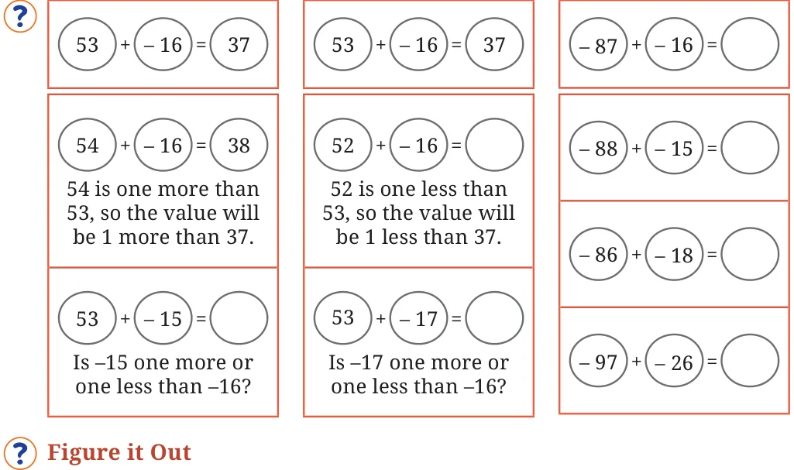
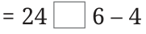
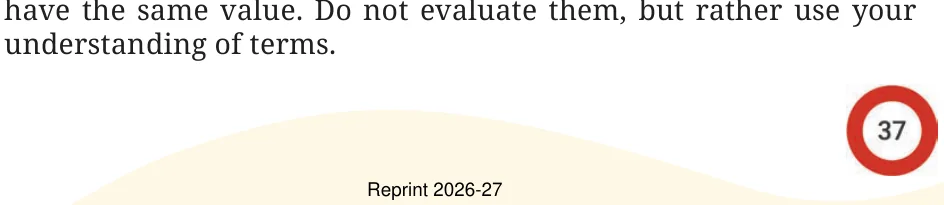
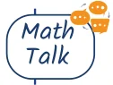

- 1.Fill in the blanks with numbers, and boxes with operation signs
such that the expressions on both sides are equal.
- (a)\(24 + (6 - 4) = 24 + 6\) _____
- (b)\(38 +\) (_____ _____) \(= 38 + 9 - 4\)
- (c)\(24 - (6 +4) = 24\)

- (d)\(24 - 6 - 4 = 24 - 6\) _____
- (e)\(27 - (8 + 3) = 27 8 3\)
- (f)\(27 -\) (_____ _____) \(= 27 - 8 + 3\)
- 2.Remove the brackets and write the expression having the same
value.
- (a)\(14 + (12 + 10)\) (b) \(14 - (12 + 10)\)
- (c)\(14 + (12 - 10)\) (d) \(14 - (12 - 10)\)
- (e)\(- 14 + (12 - 10)\) (f) \(14 -\) ( \(- 12 - 10)\)
- 3.Find the values of the following expressions. For each pair, first
try to guess whether they have the same value. When are the two expressions equal?
- (a)\((6 + 10) - 2\) and \(6 + (10 - 2)\)
- (b)\(16 - (8 - 3)\) and \((16 - 8) - 3\)
- (c)\(27 - (18 + 4)\) and \(27 +\) ( \(- 18 - 4)\)
- 4.In each of the sets of expressions below, identify those that

- (a)\(319 + 537\), \(319 - 537\), \(- 537 + 319\), \(537 - 319\)
- (b)\(87 + 46 - 109\), \(87 + 46 - 109\), \(87 + 46 - 109\), \(87 - 46 + 109\), 87
\(- (46 + 109)\), \((87 - 46) + 109\)
- 5.Add brackets at appropriate places in the expressions such that
they lead to the values indicated.
- (a)\(34 - 9 + 12 = 13\)
- (b)\(56 - 14 - 8 = 34\)
- (c)\(- 22 - 12 + 10 + 22 = - 22\)
- 6.Using only reasoning of how terms change their values, fill the
blanks to make the expressions on either side of the equality (=) equal.
- (a)\(423 + ______= 419 +\) ______
- (b)\(207 - 68 = 210 -\) ______
- 7.Using the numbers 2, 3 and 5, and the operators ‘+’ and ‘ - ’, and
brackets, as necessary, generate expressions to give as many different values as possible. For example, \(2 - 3 + 5 = 4\) and \(3 - (5 - 2)\)
\(= 0\).
- 8.Whenever Jasoda has to subtract 9 from a number, she subtracts 10
and adds 1 to it. For example, \(36 - 9 = 26 + 1\).
- (a)Do you think she always gets the correct answer? Why?

- (b)Can you think of other similar strategies? Give some
examples.
- 9.Consider the two expressions: a) \(73 - 14 + 1\), b) \(73 - 14 - 1\). For each
of these expressions, identify the expressions from the following collection that are equal to it.
- (a)\(73 - (14 + 1)\) b) \(73 - (14 - 1)\)
- (c)\(73 +\) ( \(- 14 + 1)\) d) \(73 +\) ( \(- 14 - 1)\)